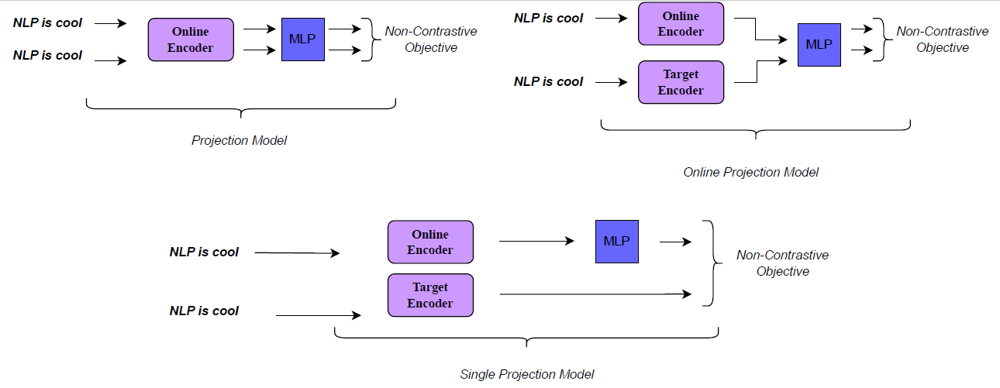
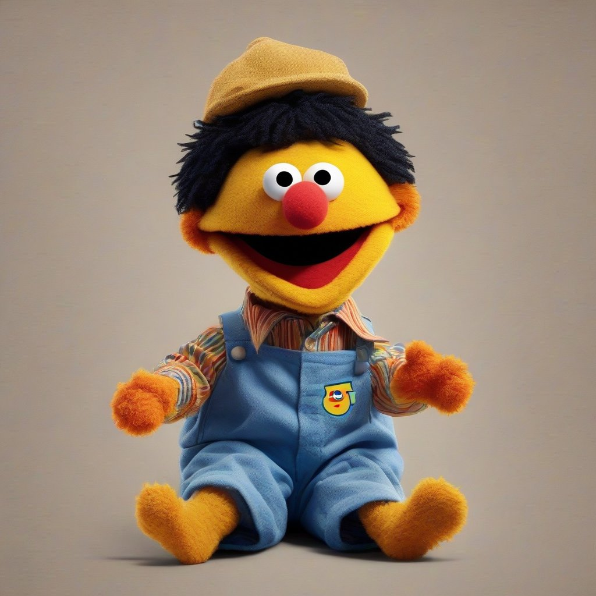
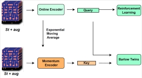

|
Omer Veysel Cagatan I am a senior Computer Engineering student at Koç University I am currently an undergraduate researcher at KUIS AI Center. Email / CV / Google Scholar / Twitter / Github |

|
ResearchI am primarily focused on making Deep Learning accessible to a global audience by developing efficient data-driven agents and language models. My main area of interest is at the crossroads of Deep Reinforcement Learning, Representation Learning, and Natural Language Processing. Moreover, I hold a deep fascination and curiosity for various subdomains within the realm of Deep Learning. |
|  |
UNSEE: Unsupervised Non-contrastive Sentence Embeddings
Omer Veysel Cagatan EACL 2024, 2023 bibtex |
|  |
ToddlerBERTa: Exploiting BabyBERTa for Grammar Learning and Language Understanding
Omer Veysel Cagatan CoNLL--CMCL Shared Task: The BabyLM Challenge, 2023 bibtex |
|  |
BarlowRL: Barlow Twins for Data-Efficient Reinforcement Learning
Omer Veysel Cagatan, Baris Akgun ACML, 2023 bibtex |
|
Template from this source code. |